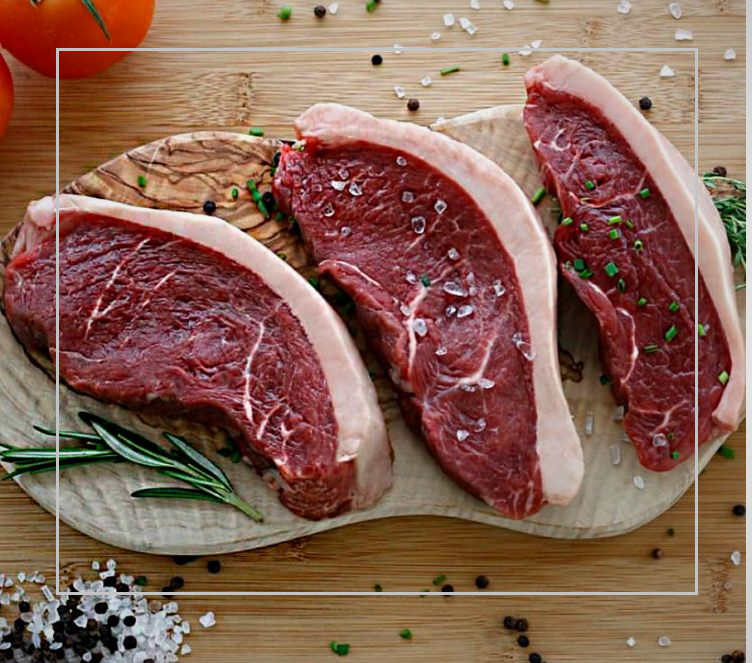
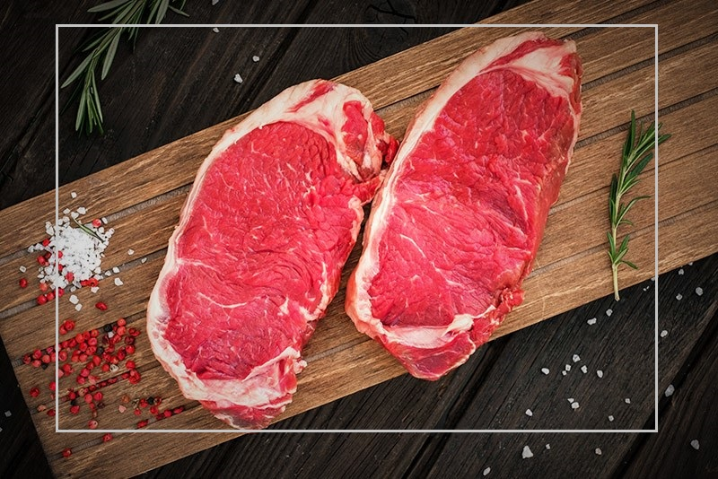
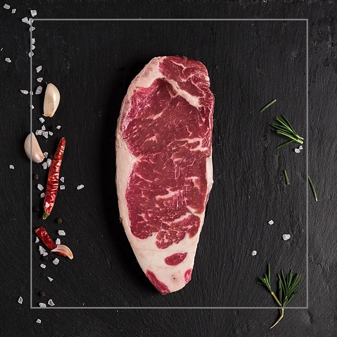
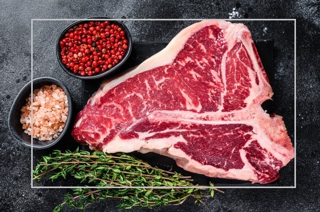
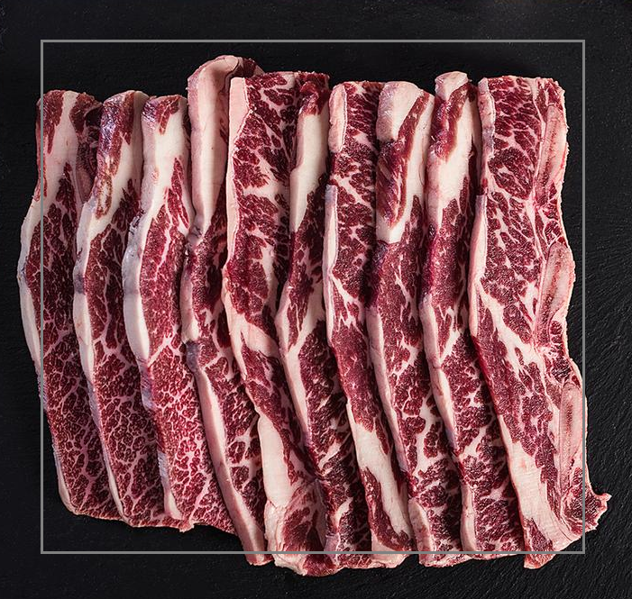
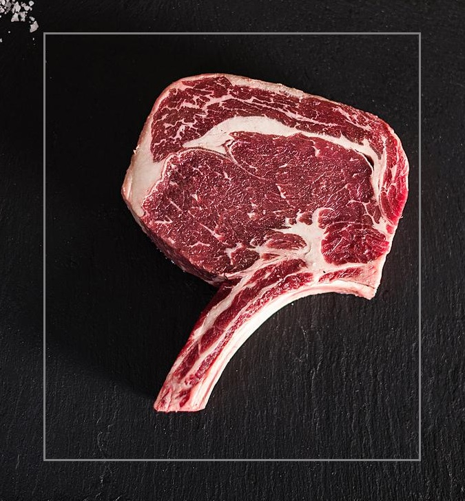

Cortes
Nuestro corte comienza con la selección de producto importado de la más alta calidad. En el proceso de marinado, logramos textura, sabor y jugosidad inigualables. Buscamos que esté suave pero a la vez que tenga mordida y buena textura. Con un precio de 250 MXN
Arracherra

Tradicional pieza brasileña con un toque de la casa. Uno de los cortes de carne más jugosos que hay. Posee un sabor y suavidad inigualables. Esta pieza tiene un sabor intenso que la hacen de las favoritas de nuestra parrilla. Nuestra recomendación es pedirla 3/4. Con un precio de 350 MXN
Picaña

Este corte de carne es magro y jugoso. Es un corte sin hueso que proviene de la parte baja de la cadera. Disfrútalo término medio a 3/4 para conservar suavidad y jugosidad. Con un precio de 400 MXN
Sirlon

Uno de los cortes tradicionales favoritos por su equilibrio entre sabor, marmoleo y textura. Disfrútalo término 3/4. Con un precio de 450$
New York

Porción de filete con hueso. Corte de carne clásico del norte de México. Pieza magra cocinada a brasa baja para que se mantenga tierna y llena de sabor. Disfrútala término 3/4. Con un precio de 300 MXN
Cabreria

Reconocido por su gran suavidad y sabor. Corte sin hueso proveniente del costillar. Te recomendamos pedirlo término medio ó 3/4 para conservar suavidad y jugosidad. Con un precio de 550 MXN
Rib Eye

Exquisito corte de carne proveniente de la parte inferior del lomo de res. Posee un hueso que divide la pulpa en 2 porciones: filete y New York. Te sugerimos pedirlo 3/4 para disfrutarlo en su punto. Con un precio de 700 MXN
PorterHouse

Corte fino de costillas cargadas o también conocido como agujas. Suculento corte que se extrae del diezmillo, es un corte sumamente suave, jugoso y de gran sabor Con un precio de 450 MXN
Costilla

El COW BOY es un corte que se obtiene del rib eye con hueso. Se le rasura la gota de grasa de la punta lo que hace que quede expuesto el hueso. De esta manera se obtiene un corte con mayor proporción de carne. Con un precio de 500 MXN
Cow Boy
CONTACTENOS
Carretera Sombrerete- El Calabazal, Panamericana S/N, El Chahuita, 99100 Sombrerete, Zac.
Tel. 55 9525 9585
Horario Lun-Dom de 9:00 a 23:00